Префектура Киото · Киото · прогулки
Шесть улиц старого Киото: храмы Тэрамати, рынок Нисики, Сидзё, Годзё, Понтотё и Симмати
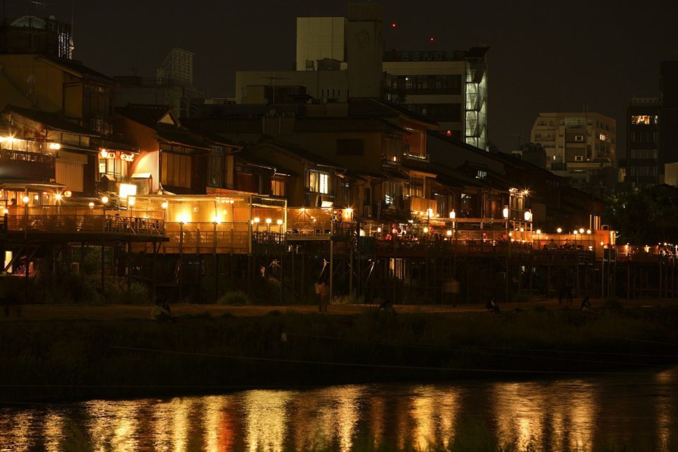
Улиц в Киото не счесть, но у каждой из главных своя история: одну перестроил Хидэёси Тоётоми, другую называют кухней города, на третьей до сих пор стучат по камням сандалии майко. Мы прошли шесть улиц центра и по пути заглянули в лавки, которые любят сами киотосцы.
Тэрамати
Улица храмов, которая стала торговой
Сегодня Тэрамати не кажется широкой, но когда-то это была Хигаси-Кёгоку, восточная граница древней столицы Хэйан-кё. Вдоль неё стояли усадьбы аристократов и воинов. Здесь находилась и усадьба Каварано-ин, хозяина которой считают одним из прообразов принца Гэндзи. Во второй половине XV века смута Онин почти целиком выжгла улицу.
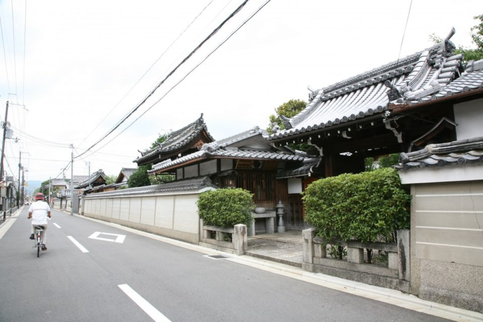
Нобунага Ода (1534–1582) был полководцем, который начал объединять раздробленную Японию; в храме Хонно-дзи его настигло восстание собственного вассала. Улицу же возродил его преемник Хидэёси Тоётоми (1537–1598), правитель, перестроивший Киото. Он восстановил дорогу и перенёс на неё храмы, разбросанные по всему городу. Так она и получила имя Тэрамати, «храмовый квартал».
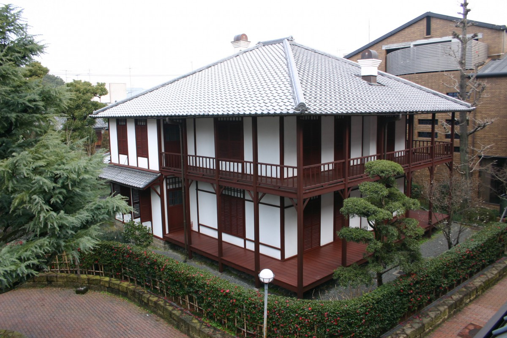
Дзё Нидзима (1843–1890) тайно уехал учиться в Америку ещё до открытия страны, а вернувшись, основал в Киото христианскую школу, из которой вырос университет Досися. Его жена Яэ Нидзима (1845–1932) в молодости с оружием в руках обороняла замок своего княжества в гражданской войне, а позже стала сестрой милосердия.
Вслед за храмами на улицу потянулись торговцы и ремесленники, которые на них работали, и Тэрамати постепенно превратилась в торговую. В эпоху Мэйдзи здесь открывались модные тогда заведения с говядиной в котелке сукияки, кондитерские в европейском духе и фотоателье.
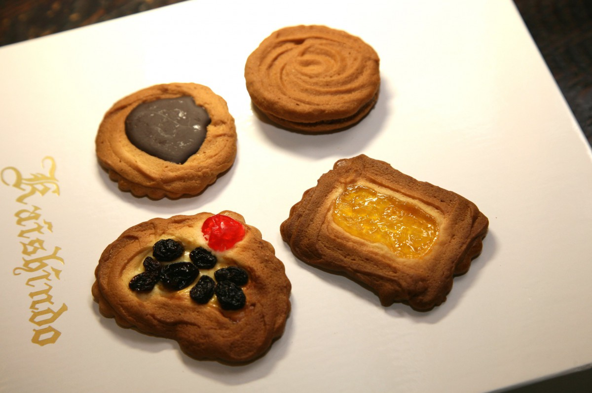
«Мураками Кайсиндо»
- Адрес
- префектура Киото, Киото, Накагё, Тэрамати-дори, Нидзё агару
- Цены / Вход
- «русский кекс» 205 иен за штуку, «Кодзубукуро» 508 иен, набор печенья по предварительному заказу 5832 иены
В эпоху Сёва к югу от улицы Сидзё вырос квартал магазинов электроники. Участок между улицами Оикэ и Сидзё накрыли крытой галереей, и там поселились художественные галереи и букинисты. Храмы и модные лавки здесь соседствуют до сих пор, и у улицы много лиц.
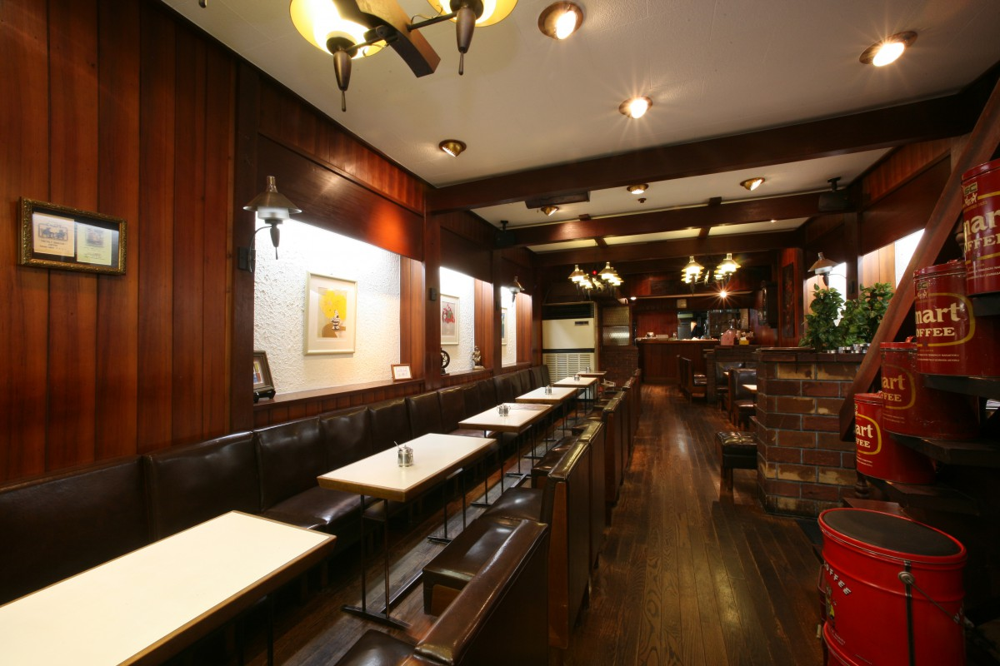
Smart Coffee
- Адрес
- префектура Киото, Киото, Накагё, Тэрамати-дори, Сандзё агару
- Цены / Вход
- кофе 500 иен, панкейки 650 иен, обед 1200 иен
Нисики
Кухня Киото на трёх метрах ширины
Нисики-кодзи тянется от торговой улицы Синкёгоку на запад и для Киото узкая и короткая. Зато рынок Нисики на её восточном конце знают по всей стране. Его называют «кухней Киото», и местные доверяют ему за качество товара.
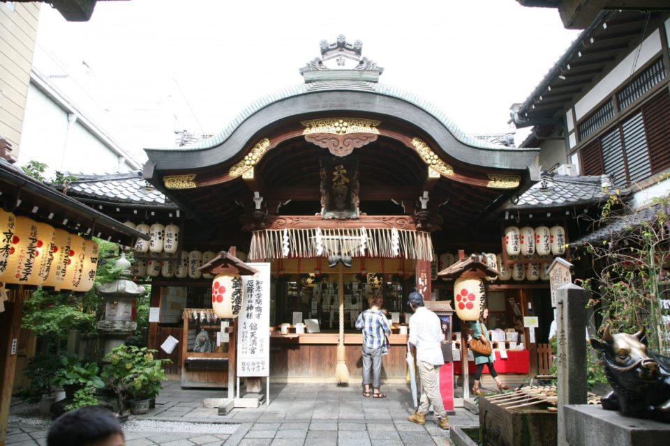
По обе стороны улицы шириной около трёх метров стоят лавки с киотскими овощами, речной рыбой, юбой и соленьями. Покупают здесь повара, местные хозяйки и путешественники из Японии и других стран. В последние годы многие лавки переделали часть помещения в маленькие закусочные, где готовят из собственных продуктов. На рынок теперь приходят не только за покупками, но и поесть.
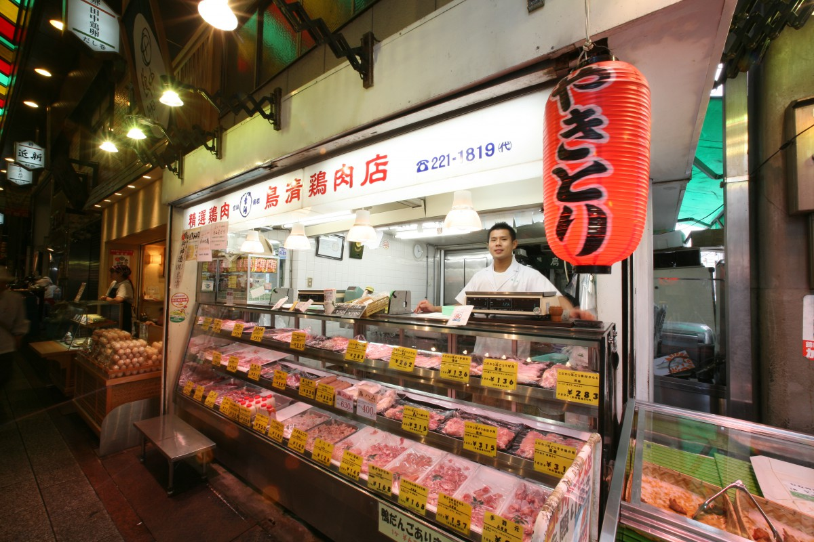
«Торисэй»
- Адрес
- префектура Киото, Киото, Накагё, Нисикикодзи-дори, Томинокодзи нисиири
Имя Нисики-кодзи улица носит с эпохи Хэйан, хотя сначала, говорят, её звали иначе и куда менее благозвучно. По преданию, красивое имя «Нисики», «парча», выбрали в пару к соседней улице Аяно-кодзи, где «ая» означает узорный шёлк.
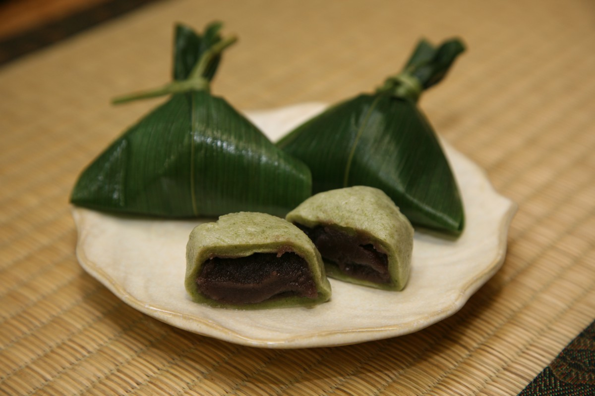
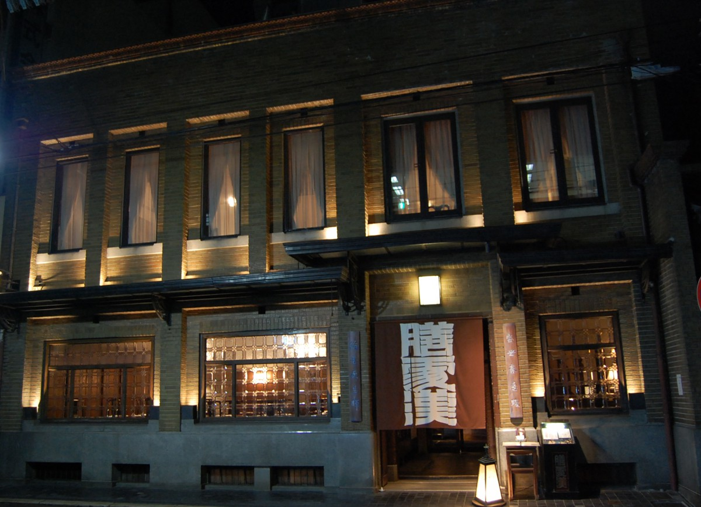
Zezekan Pocchiri
- Адрес
- префектура Киото, Киото, Накагё, Нисикикодзи-дори, Муромати нисиири
Сидзё
Главный проспект между двумя святилищами
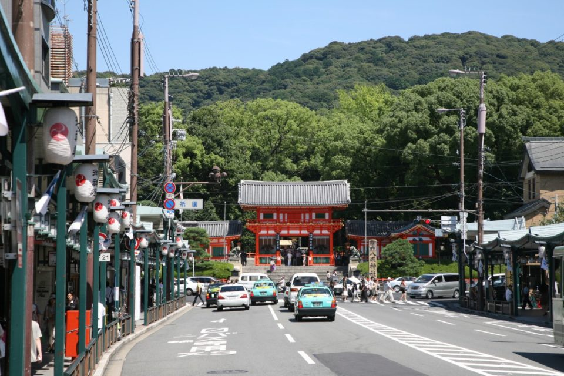
У Сидзё много лиц: квартал гейш, деловой центр, улица развлечений. На восточном конце её замыкает святилище Ясака-дзиндзя, а если перейти мост Мацуо на западе, попадёшь к святилищу Мацуноо-тайся. Поэтому Сидзё называют дорогой, которая соединяет два святилища. Её часть от Синкёгоку на запад повторяет проспект Сидзё-одзи древней столицы.
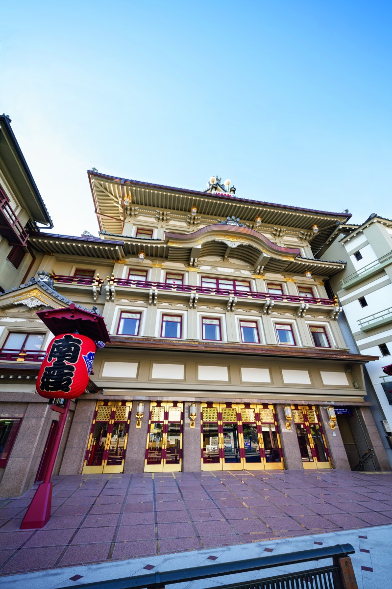
Театр Минамидза
- Адрес
- префектура Киото, Киото, Хигасияма, у восточного края моста Сидзё-охаси
- Часы работы
- зависят от спектакля
- Цены / Вход
- зависят от спектакля
Раньше всего обжили окрестности перекрёстка с улицей Муромати. В 1142 году горожане построили мост Сидзё, чтобы ходить на поклонение в святилище Гион, как тогда называли Ясака-дзиндзя, а в эпоху Камакура здесь работало множество цехов торговцев и ремесленников.
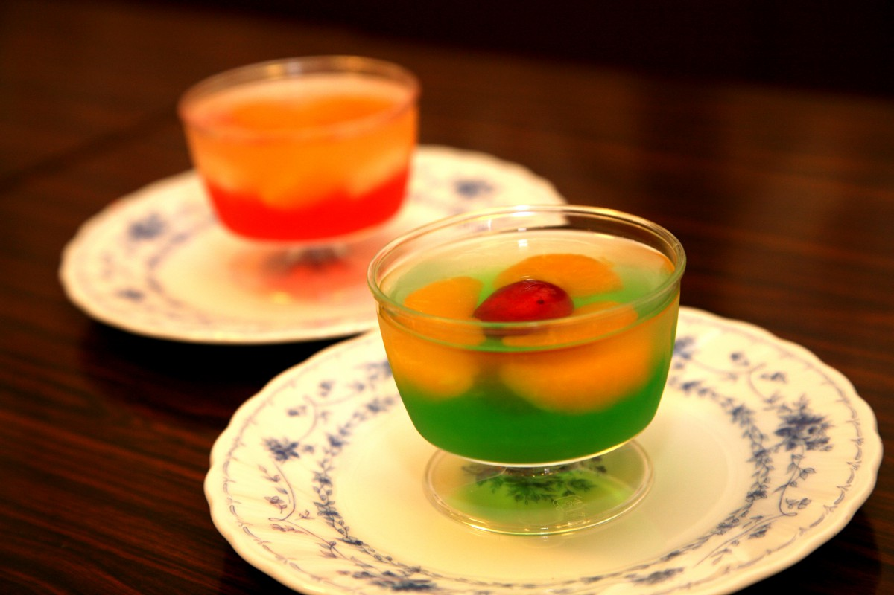
«Киритоси Синсиндо»
- Адрес
- префектура Киото, Киото, Хигасияма, Гион-мати, Китагава
- Цены / Вход
- «Мидорино» и «Акаино» по 350 иен, кофе 450 иен
Восточнее улицы Каварамати город стал расти только в эпоху Эдо, когда открылся квартал Гион. На берегу у Сидзё к тому времени уже выступала Окуни из Идзумо, танцовщица конца XVI века, с которой начался театр кабуки, и строились театральные балаганы. Берег стал главной театральной сценой столицы.
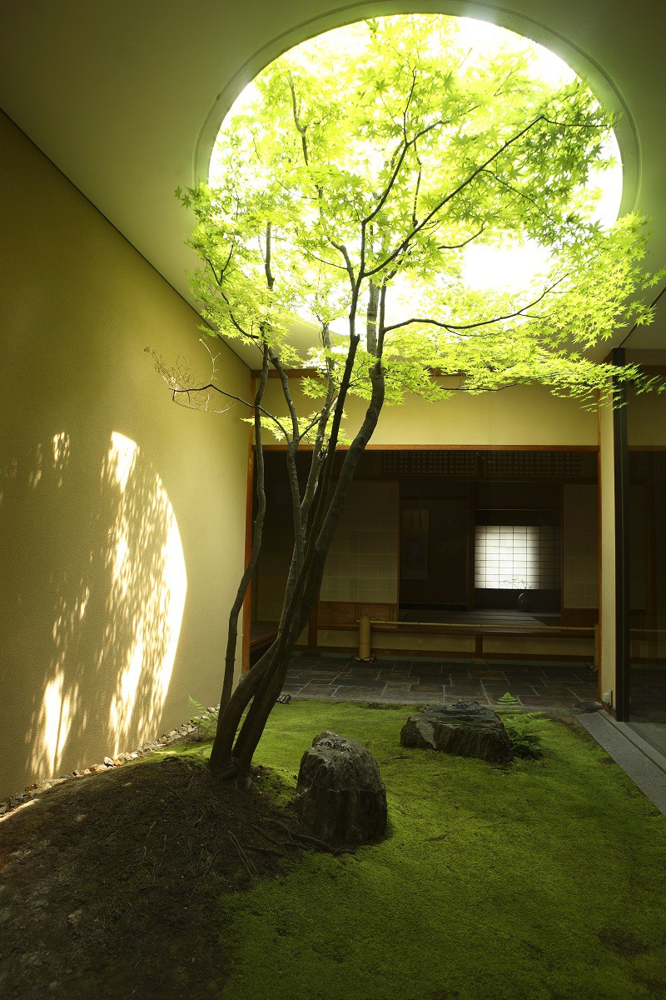
Музей Кахицукан
- Адрес
- префектура Киото, Киото, Хигасияма, Сидзё-дори, Гион-мати, Китагава
Квартал гейш и паломники в святилище Гион привлекали торговцев, и лавок на улице становилось всё больше. В конце эпохи Эдо здесь сложилась школа живописи Сидзё со своим собственным стилем, и Сидзё окончательно стала самой нарядной улицей столицы.
«Нидзюсанъя»
- Адрес
- префектура Киото, Киото, Сидзё-дори
Годзё
Улица, которую создал мост
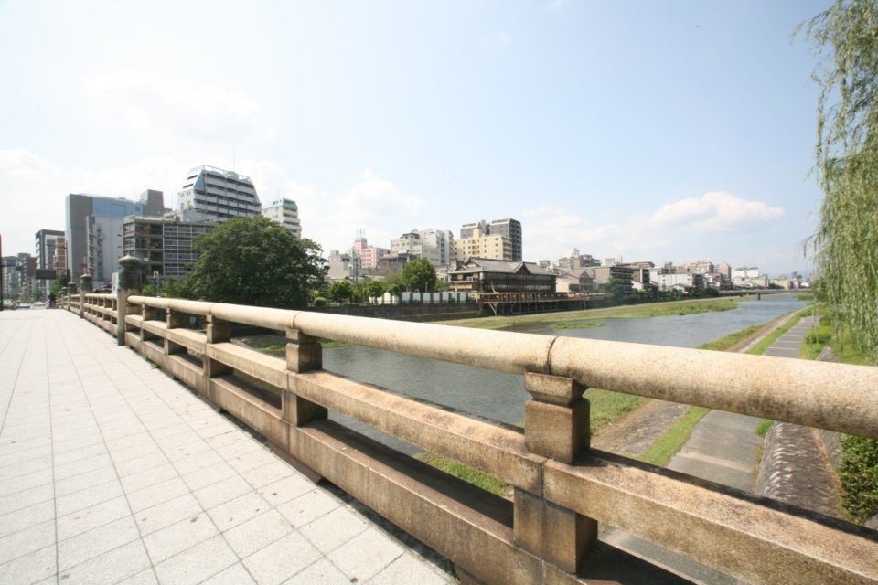
Годзё родилась из-за моста через Камо. В древней столице здесь проходила улица Рокудзё-бомон-кодзи. Когда Хидэёси Тоётоми строил храм Хоко-дзи с огромной статуей Будды, он перенёс на эту дорогу, ведущую к храму, мост, который стоял на прежней улице Годзё, нынешней Мацубара. Мост сначала прозвали Дайбуцу-баси, «мостом Большого Будды», потом переименовали в Годзё, и улица получила то же имя.
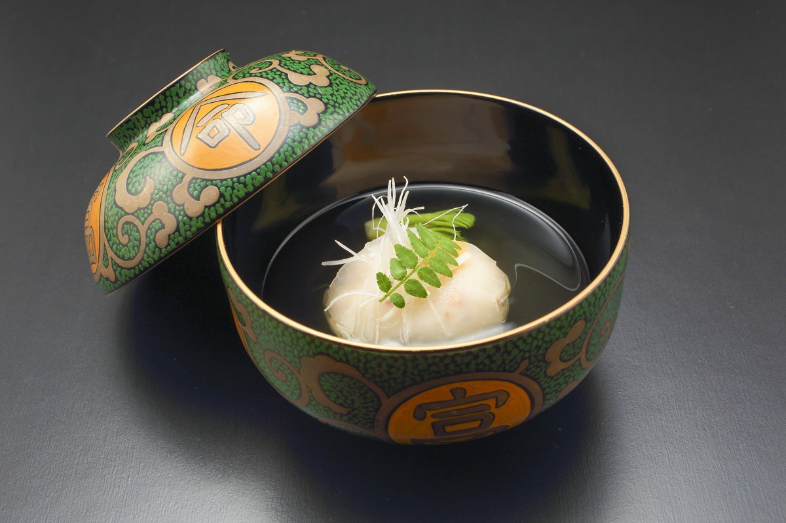
«Харисэй»
- Адрес
- префектура Киото, Киото, Хигасияма, район станции Киёмидзу-Годзё
- Цены / Вход
- обед от 5000 иен, ужин от 11 000 иен, без налога и обслуживания
Ширина улицы около 50 метров. Её расширили в конце Второй мировой войны, когда сносили дома, чтобы пожары от бомбёжек не перекидывались дальше. Сегодня Годзё совпадает с национальными трассами 1 и 9 и стала главной транспортной артерией Киото, поэтому старого очарования здесь немного. Зато в последние годы в бывших офисных зданиях открылись магазины и маленькие студии, и вдоль Годзё появилось несколько интересных переделанных домов.
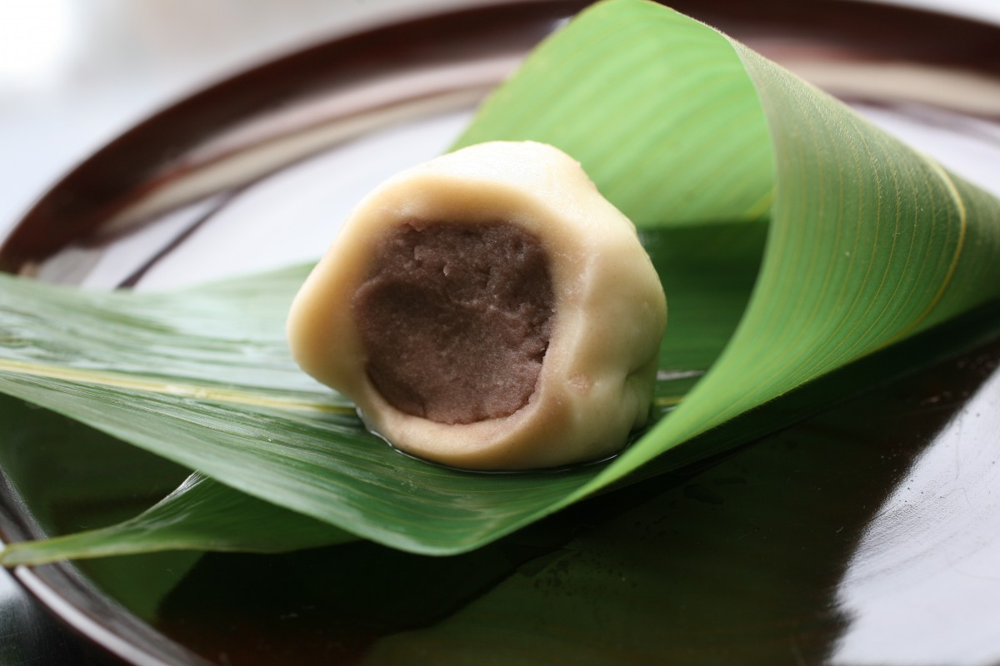
Hanbey
- Адрес
- префектура Киото, Киото, Симогё, у перекрёстка улиц Годзё и Кавабата
- Цены / Вход
- «сасамаки-фу» 1242 иены за 5 штук
Понтотё
Квартал гейш над рекой Камо
Мокрые от полива камни мостовой и цоканье высоких деревянных сандалий майко. Такой Киото лучше всего ловить в Понтотё, одном из пяти кварталов гейш города. Улица длиной около 500 метров тянется вдоль Камо от улицы Сидзё на север почти до улицы Сандзё.
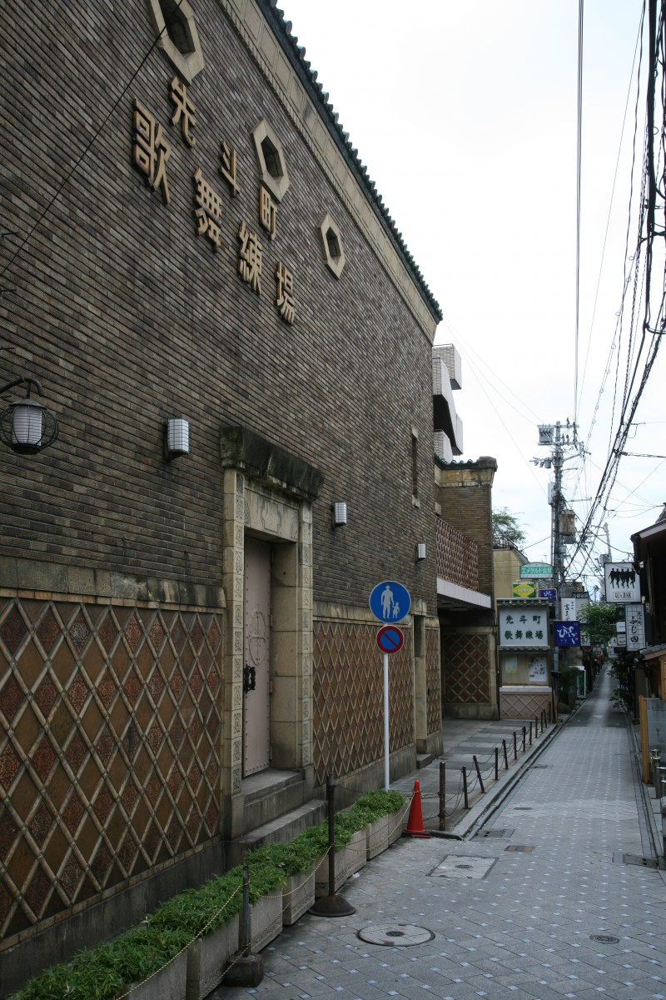
Театр Понтотё Кабурэндзё
- Адрес
- префектура Киото, Киото, Накагё, Понтотё-дори, Сандзё сагару
Улица появилась в эпоху Эдо. Первые дома встали здесь в 1674 году, в 1712 году сёгунат разрешил чайные дома и постоялые дворы, а в 1813 году и увеселительный квартал. Тогда же появились заведения, которые ставили столики прямо на речном берегу. Из них и выросли нынешние летние веранды юка.
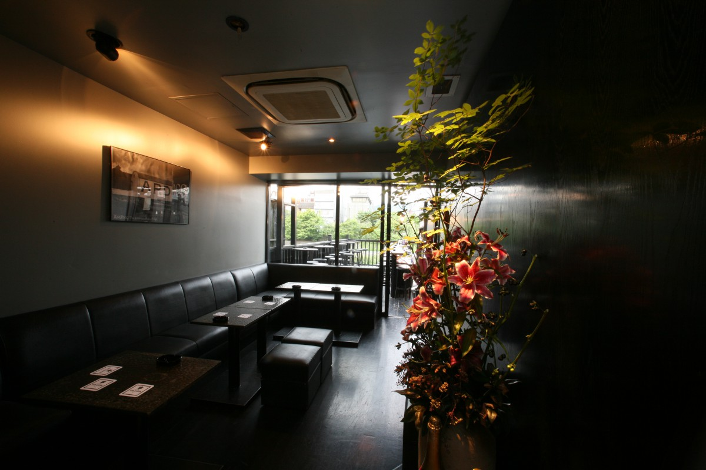
BAR ATLANTIS
- Адрес
- префектура Киото, Киото, Накагё, Понтотё, Сидзё агару
- Цены / Вход
- коктейли от 970 иен
Сегодня в Понтотё всё больше заведений, куда пускают без рекомендации постоянных гостей, но квартал всё равно хранит облик старого района гейш. Чтобы почувствовать его настроение, приходите вечером.
Симмати
Улица купцов и праздника Гион
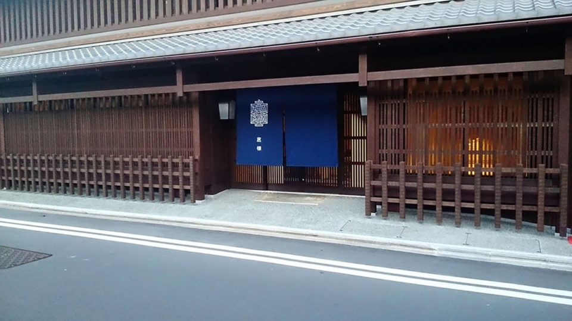
Симмати была одной из главных улиц города ещё в эпоху Хэйан. Тогда она звалась Матидзири-кодзи. Её северный конец примыкал к кварталу мастеров, чинивших императорский дворец, и края этого квартала называли «устьем» и «хвостом» улицы, откуда и пошло имя. Нынешнее название Симмати, «новая улица», появилось после того, как Хидэёси Тоётоми заново размежевал город в годы Тэнсё, в конце XVI века.
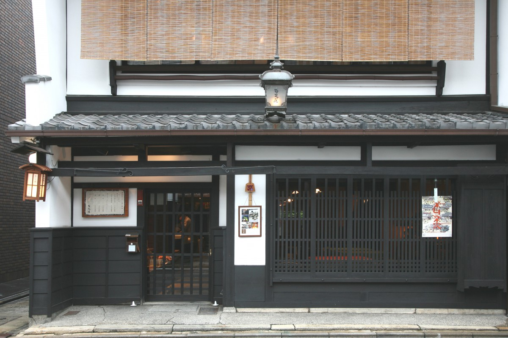
«Мукадэя хонтэн»
- Адрес
- префектура Киото, Киото, Накагё, Симмати-дори, Нисикикодзи агару
С эпохи Хэйан здесь был центр торговли, и горожане объединялись в цеха с исключительными правами. В конце XVI века здесь стояла усадьба богатого купеческого дома Тяя, главы которого из поколения в поколение носили имя Сиродзиро. Позже здесь вёл дела меняла Такатоси Мицуи (1622–1694), основатель торгового дома, из которого выросла финансовая группа Мицуи.
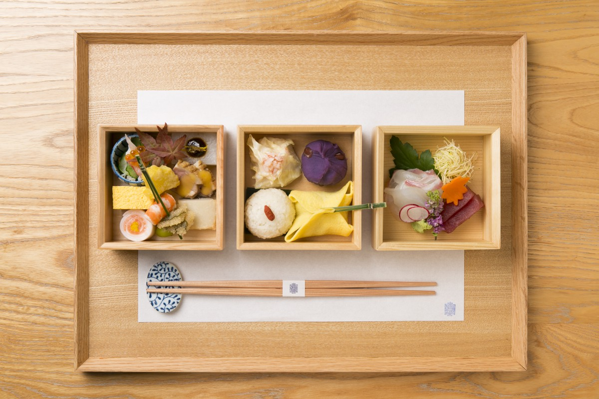
IZAMA
- Адрес
- префектура Киото, Киото, Накагё, Симмати-дори, Роккаку сагару
- Цены / Вход
- набор закусок «Ва-тэнсин» 4860 иен, только вечером
Симмати входит и в квартал платформ ямабоко праздника Гион-мацури. От улицы Сандзё на юг до улицы Такацудзи на ней стоят семь платформ первого и второго шествий: Хатиман-яма, Кита-Каннон-яма, Минами-Каннон-яма, Хока-боко, Сидзё-мати Офунэ-боко, Фунэ-боко и Ивато-яма. По ним легко представить, как богата была когда-то эта улица.
Фото: Shochiku.